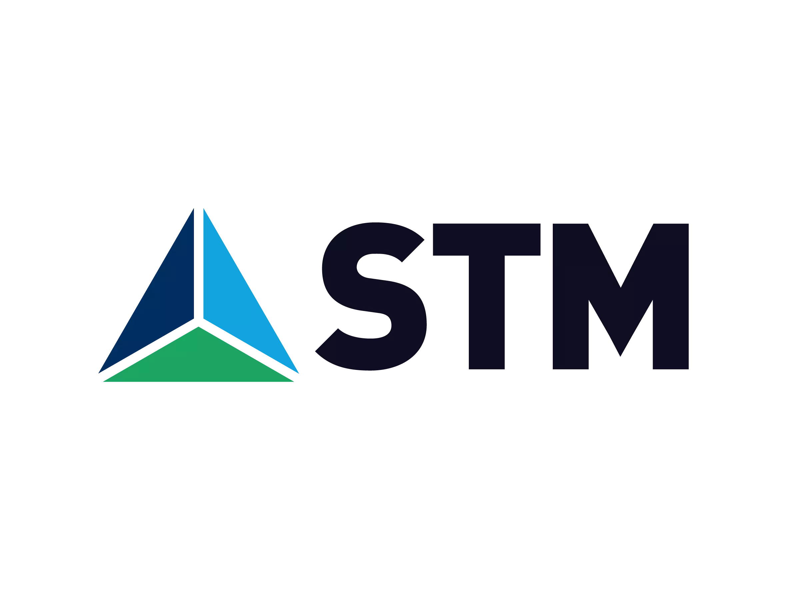
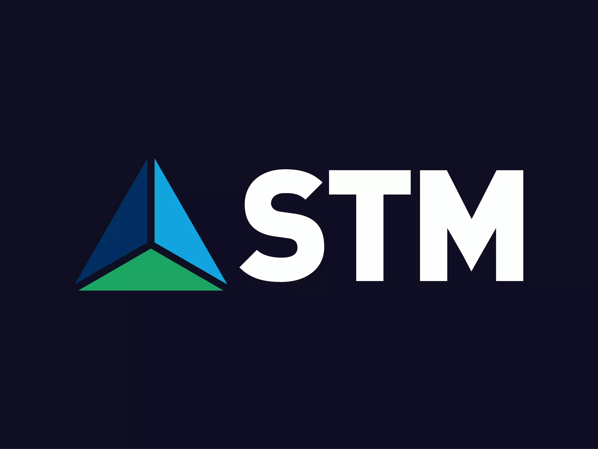
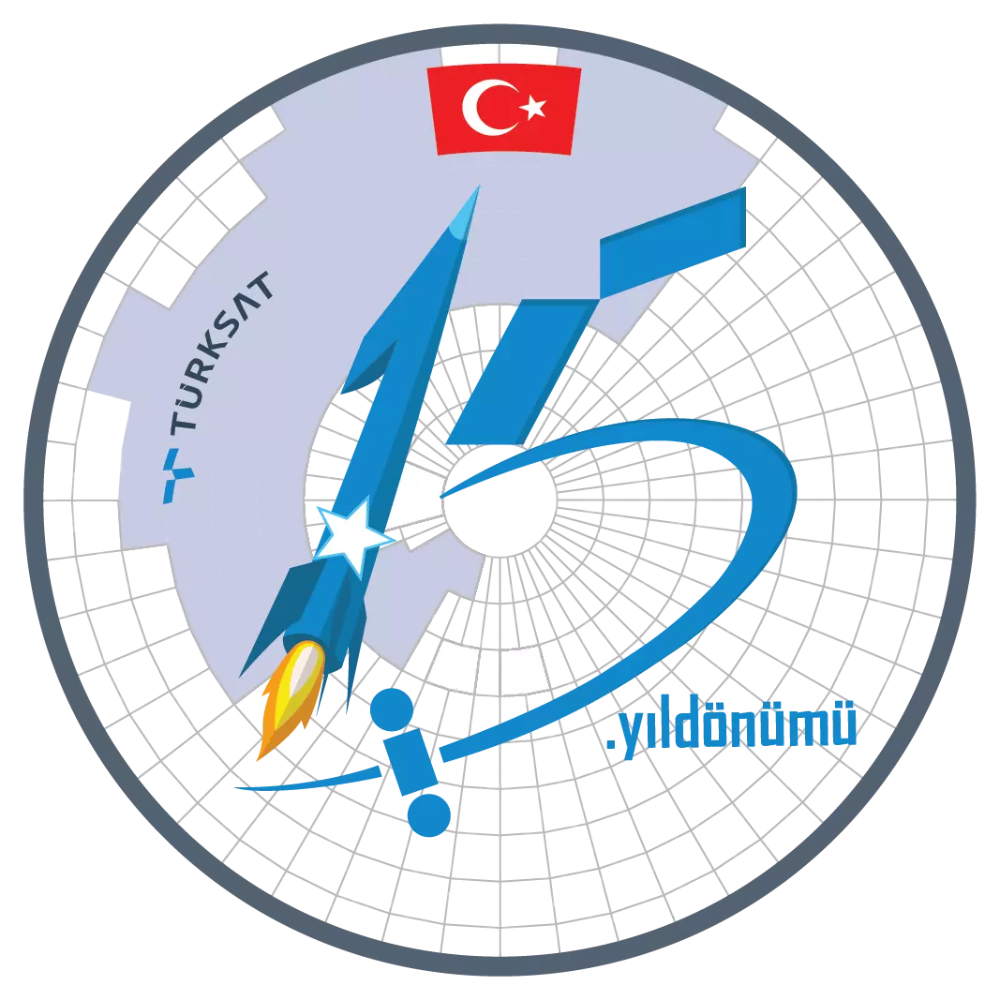
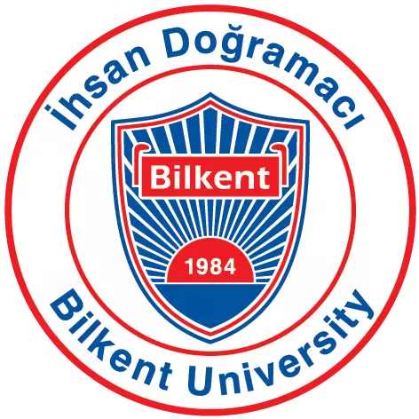

Ömer Levent Durdalı
Hello.
I combine my Software Engineering education with 2 years of experience in Translation, Mechanical Design and Mechanical Production. But currently I work as an Information Security Associate
I ❤️ reading tech, defense industry articles and learning about Arduino - Raspberry Pi like electronics. Oh and I just started solving OSINT Geolocation Challenges, you can check them out on my Medium page.
Experience
-
-
Cyber Security Directorate - TBA
- TBA
- TBA 2023 - TBA
-
-
Cyber Security Directorate - Security Management and Architecture Team
- Created a databank of Social Engineering (Phishing, Smishing, Vishing) topics greatly reducing the time to conduct these company-wide. Also, with the use of some specialized Sites/Projects, the Phish Databank is being updated to match emerging problems.
- - Public Phish Example - Turkcell SSO - BITB
- Created Information Security Awareness plans, training and communication roadmaps. Also carried out studies that will increase overall security competence of the employees
- - Public Security Awareness Examples - Turkish - Security Awareness Gitbook
- Helped determine Cyber and Information Security strategy in compliance with overall company strategies.
- Helped manage Information Security process and provided coordination on Governance, Risk and Compliance for Cyber Security.
- Working remotely with the Istanbul team.
- Sep 2021 - Jan 2022 · (1 years, 4 months)
-
-
Security Operation Center (SOC)
- Wrote, Maintained and optimized multiple IBM Security SOAR (Resilient) App, Rule and Playbooks also while writing entirely new apps. These were used by our L2-L3 analysts, greatly reducing their work.
- Created a Resilient and MISP automation project gratly reducing the time to triage and analysing.
- Created a Metric Project with Qradar and Resilient, which was used to demonstrated the work done to upper management.
- Splunk and IBM Qradar Integration for Creating dashboards, which were used by our SOC.
- Stack: MSIP, QRadar, IBM Resilient, Triage Configuration, Splunk, Python, STIX
- May 2021 - Jul 2021 · (3 months)
-
 STM DefenceCyber Security Intern
-
Cyber Security Directorate / Cyber Fusion Center
- Web Application Development with Django Framework (Threat Intelligence Application).
- Created a Honeypot Configuration and Management demo for the directorate.
- Attack Surface Analysis & Reports.
- Open Source Intelligence (OSINT) with variety of tools.
- Malware Analysis (PoetRAT).
- Created custom OSINT/Web Analysis scripts with Python, reducing the time to write Attack Surface Analysis & Reports.
- Stack: Django Development, Threat Intelligence Platform Development, Honeypot, VBA Macro, Attack Surface Analysis, OSINT (Tor Node, Spiderfoot, Maltego, Recon-ng), Python, Recorded Future
- Feb 2020 - Jun 2020 · (5 months)
-
Turksat Satellite Inc.IT Security Intern
-
Enterprise Information and Cyber Security Directorate
- Wrote and Implemented Switch and Router Hardening Document.
- Network Security and Monitoring.
- Created Excel VBA and Python automation tools for internal tools reducing weekly manual work.
- Analyzed and documented different web tracker behaviors that effected certain servers.
- Researched and documented various different IT Security related topics.
- Stack: Cisco CLI, Cisco Routers and Switch, VBS Macro, Python, Log4j, Tomcati, Regex
- Jun 2019 - Aug 2019 · (3 months)
Education
-
Bachelor of Science - Computer Technology and Information SystemsBilkent University
- 3rd and 4th year Honour Certificate
- Member of Information Security Society, Science Fiction and Fantasy Society and East Asia Society
- Elixir (Agricultural Irrigaiton support and optimizaiton system)
- Stack: MQTT, Python, Node.js and React (Azure), InfluxDB (Google Cloud), Shell, MonoDB (AWS), Raspberry Pi
- Smart Home Automation System
- Stack: MQTT, C, Node-RED, ESP8266
- Systems Engineering, Software Validation Verification and Testing, Information Systems Auditing
- Important Projects:
- Electives:
- Learned Languages: Java, C , C#, .Net, Python, SQL, R, Django, Javascript, PHP, Node.js, React
- 2,96 / 4.00 GPA
- 2017 - 2021
-
 Technical High School Degree - Mechanical TechnologiesASO Technical College
Technical High School Degree - Mechanical TechnologiesASO Technical College- Draw hand-made Technical Drawings, use AutoCAD and Solid Works / Solid CAM
- Used CNCs, lathes, and mills.
- Here is my GrabCAD profile.
- 2013 - 2017